Практичний досвід · журнал «ДентАрт» 2015 №4
Доадгезивна підготовка тканин зуба. Частина 1: Емаль
PRE-ADHESIVE PREP OF TOOTH TISSUE
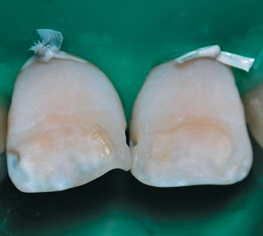
Частина 1. Емаль
Успішність фіксації прямих і непрямих адгезивних реставрацій безпосередньо залежить від якості доадгезивної і власне адгезивної підготовки субстрату. Концепція мінімальної інвазії передбачає максимальне збереження натуральних тканин зуба, тому традиційні підходи потребують перегляду і корекції.
По-перше, запорукою якісної обробки тканин зуба є оптичне збільшення, добре обладнане робоче місце та інструментальне оснащення, які має у своєму розпорядженні лікар-стоматолог (фото 2). По-друге, знаючи особливості підготовки емалі та дентину, оператор завжди матиме можливість вплинути на якість остаточної обробки. Сучасні матеріали і технології дозволяють виконувати реставрації без препарування емалі, зберігаючи всі натуральні тканини (фото 3).
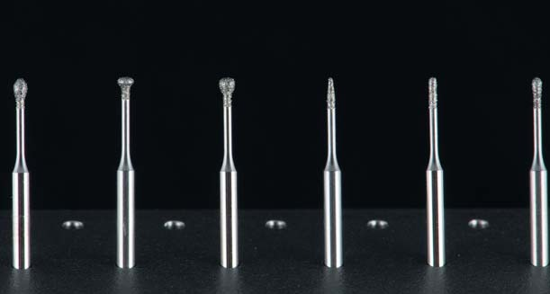
Фото 2. Набір борів для мікропрепарування.
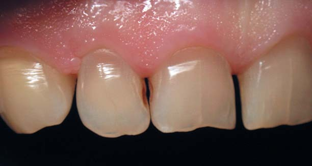
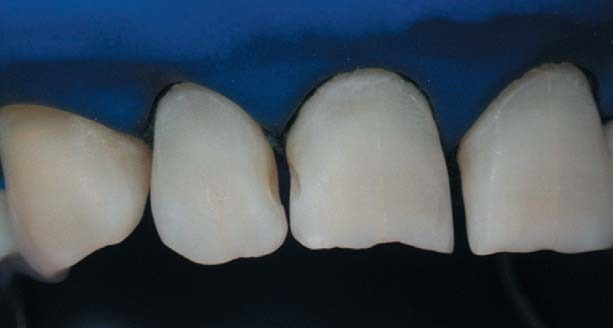
Фото 3 (а, б). Зуби, підготовані до реставрації без препарування.
Проте на кожному етапі клінічної роботи слід пам'ятати про фактори, що впливають на можливість адекватного зчеплення із субстратом. Для реставрацій без препарування такими факторами є пеликула на поверхні емалі та безпризмовий шар, які знижують силу адгезії до критичних показників (фото 4). З пеликулою можна впоратися, очистивши поверхню за допомогою абразивної пасти. Історично склалася думка, що для очищення поверхні не рекомендуються профілактичні пасти із вмістом фтору, оскільки фторапатити резистентніші до дії кислот, що може призвести до зменшення сили адгезивного з'єднання. Але більшість сучасних дослідників зійшлися на думці, що немає статистичної різниці між силою адгезії до емалі, обробленої фторвмісними і безфтористими пастами.
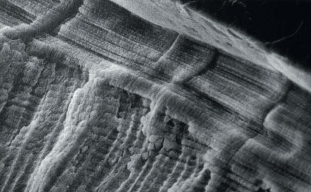
Фото 4. Пеликула, безпризмовий шар і призматична емаль.
Безпризмовий шар — це шар гідроксиапатитів, який перешкоджає надмірному розчиненню емалі під впливом різних кислот, що у свою чергу зменшує силу адгезивного з'єднання, тому цей шар вимагає видалення. Найпростіший метод — зішліфовування поверхні емалі абразивним диском або алмазним бором дрібної зернистості, що ілюструє фото 5. Рівномірнішим і менш інвазивним буде мікроабразивна підготовка за допомогою порошку оксиду алюмінію (фото 6).
Ця техніка була запропонована ще в 1945 році Р. Блеком як техніка немеханічного препарування порожнин, але не отримала широкого розповсюдження, оскільки пломбувальні матеріали і технології того часу не дозволяли якісно запечатувати отримані порожнини. Така обробка збільшує питому поверхню емалі для якісного з'єднання (фото 7).
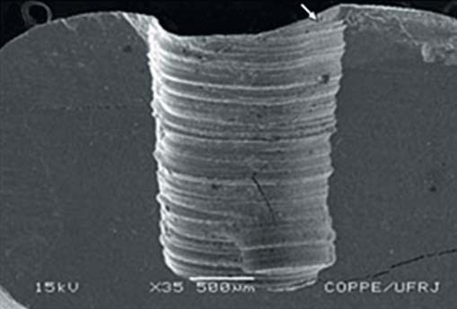
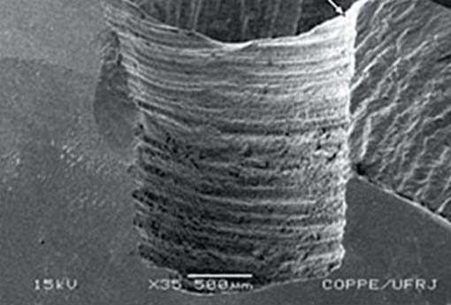
Фото 5 (а, б). Порожнина, отримана після препарування алмазним бором тимчасового (а) і постійного зубів (б).
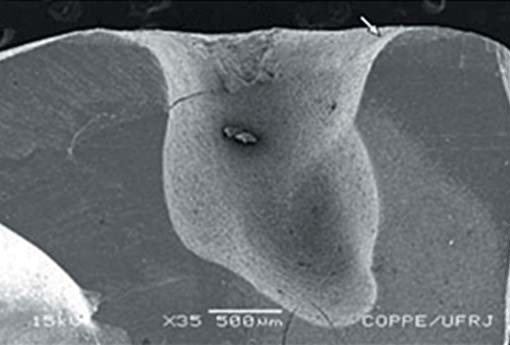
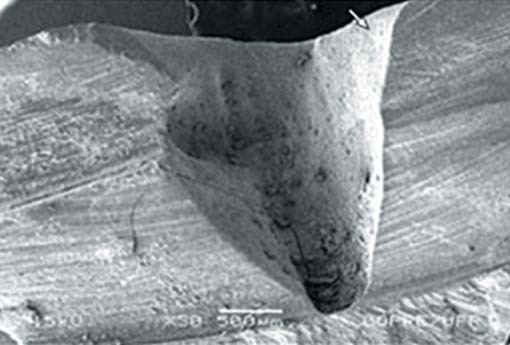
Фото 6 (а, б). Порожнина, отримана після препарування оксидом алюмінію тимчасового (а) і постійного зубів (б).
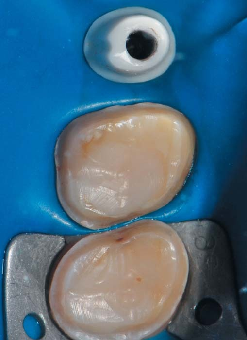
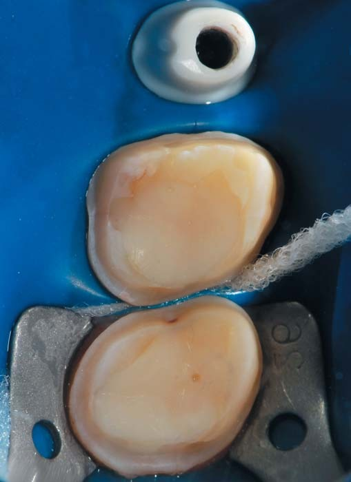
Фото 7 (а, б). Поверхня зубів до і після піскоструминної обробки.
Існує кілька фракцій порошку, які використовуються у стоматології для піскоструминної обробки. Найпопулярніші фракції — 27 і 50 мкм. Багато досліджень підтверджує кращу адгезію до поверхні, обробленої фракцією 27 мкм. Однак, незалежно від розміру фракції порошку, потрібно бути гранично обережним при роботі з оксидом алюмінію. Річ у тім, що частинки на виході з піскоструминного апарата отримують величезну кінетичну енергію і препарують емаль неселективно, без поділу на демінералізовану і здорову, і тому знімають весь об'єм тканин на шляху впливу. Друга проблема, виявлена дослідниками, — товстий змащений шар на поверхні дентину із застряглими частинками оксиду алюмінію після піскоструминної обробки.
Наведемо результати простого експерименту, який легко можна відтворити на своєму робочому місці, маючи піскоструминний апарат, оксид алюмінію, скло і секундомір (фото 8). Суть експерименту: за допомогою апарата Рондофлекс/Rondoflex (Каво/KAVO) і оксиду алюмінію фракції 50 мікрон скло товщиною 1 мм оброблене з відстані 4-5 мм протягом 1-2 с (фото 9 а, б), 3 с (фото 9 в), 5 с (фото 9 г) і 10 с (фото 9 д). Уже на перших секундах ми бачимо значний убуток поверхні. Цей експеримент не можна вважати достовірним, оскільки результат залежить від твердості оброблюваної поверхні, діаметру вихідного отвору і тиску, що подається на піскоструминний апарат. Однак він наочно показує неконтрольовану редукцію поверхневого шару. Виходячи з цього, ми можемо зробити висновок про необхідність акуратної роботи з оксидом алюмінію на емалі.
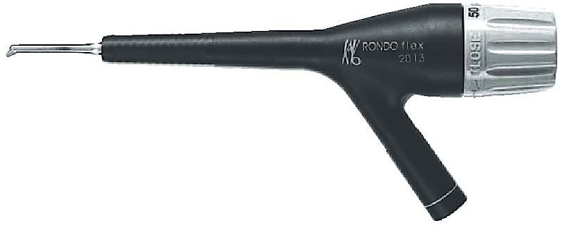
Фото 8. Апарат для піскоструминної обробки Рондофлекс/Rondoflex (Каво/KAVO)
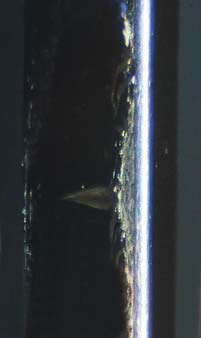
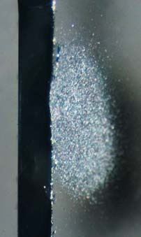
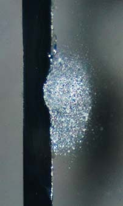
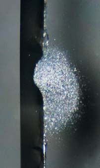
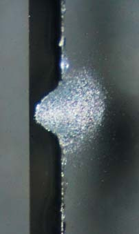
Фото 9 (а, б, в, г, д). Редукція поверхневого шару скла при піскоструминній обробці різної тривалості.
Ще один фактор успішної доадгезивної підготовки — адекватна обробка зовнішніх меж порожнини. Наявність емалі по всьому периметру відновлюваної поверхні гарантує ліпший герметизм і довговічність реставрації. Традиційне препарування обертовими інструментами, на жаль, не є достатнім методом обробки емалевого краю і вимагає різних додаткових втручань залежно від локалізації дефекту. Передусім слід пам'ятати, що після препарування алмазними борами на краю емалі залишаються відколоті емалеві призми, які після полімеризаційної усадки композиту можуть відірватися і стати однією з причин появи видимої межі, так званої «білої лінії», а згодом розгерметизації або забарвлювання країв реставрації (фото 10 а, б).
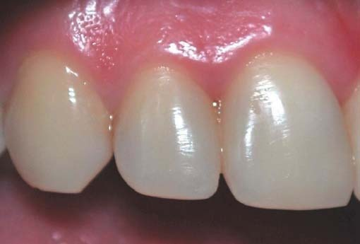
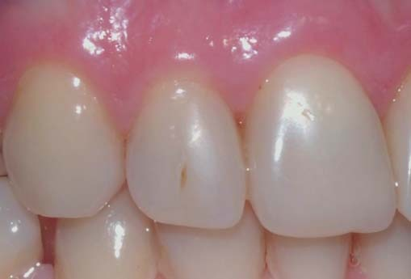
Фото 10 (а, б). Реставрація відразу після виконання (а); забарвлювання по краю реставрації через деякий час (б).
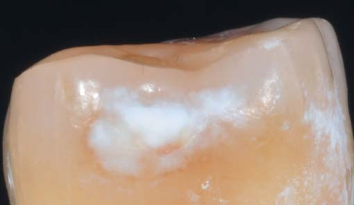
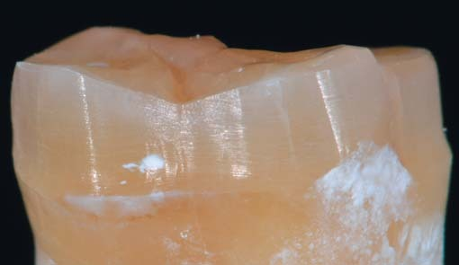
Фото 11 (а, б). Карієс контактної поверхні (а) і демінералізація (б), яка іноді залишається після підготовки під пряму або непряму реставрацію.
Для запобігання цим ускладненням досить обробити емалевий край будь-якою абразивною гумкою і лавсановою штрипсою на проксимальних ділянках. Часто контактні поверхні вимагають додаткового препарування, оскільки демінералізована емаль займає практично всю проксимальну поверхню.
Бором можна поламати тендітну емаль пришийкової зони і необґрунтовано заглибитися в зубоясенну борозну. Альтернативою препаруванню бором є скловолоконна насадка, що її розробив Валерій Горбенко, яка фіксується у тримач для турбінних борів і використовується у звукових або ультразвукових скейлерах (фото 12). Скловолокно зрізає демінералізовану емаль і руйнується при контакті зі здоровішими тканинами. Таким чином, воно чудово підходить для диференціації тканин при обробці емалевого краю і різних вогнищ демінералізації.
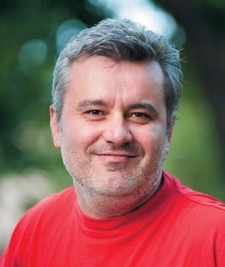
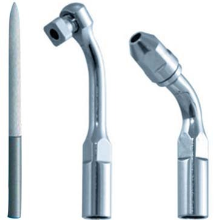
Фото 12. Валерій Горбенко — розробник скловолоконної насадки; утримувачі турбінних борів для ультразвукового скейлера, в які вона фіксується.
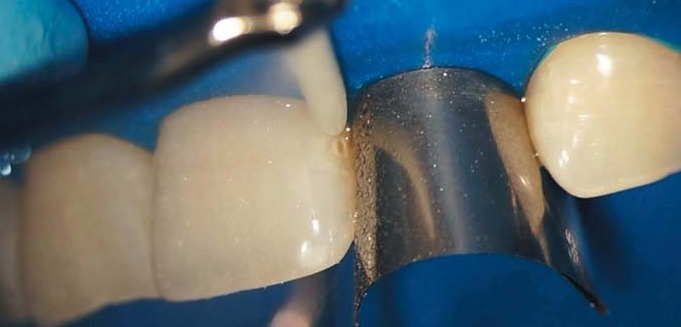
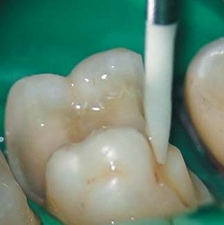
Фото 13 (а, б). Підготовка емалевого краю за допомогою скловолоконної насадки.
Препарування скловолоконною насадкою (фото 13 а, б) робиться за наявності демінералізованої емалі, особливо на проксимальних ділянках, при обробці емалевого краю після підготовки порожнини до реставрації, при обробці уступу після препарування під непрямі реставрації. М'яка селективна обробка допомагає уникнути надмірної редукції тканин зуба і забезпечити ліпший герметизм реставрації.
Часто при препаруванні емалі спостерігаються вертикальні, горизонтальні і різноспрямовані тріщини. Вертикальні тріщини характерні для більшості людей і зустрічаються у 80% уже в 20-річному віці. Вони настільки малі, що в них не потрапляє волога, вони визначаються лише при бічному освітленні і можуть не забарвлюватися тривалий період часу, аж до похилого віку. Такі тріщини не вимагають висічення, за винятком ситуацій, коли вони сильно помітні або зуб планується повністю перекривати реставрацією. Усі інші тріщини емалі, у тому числі хаотичні посттравматичні, вимагають препарування, оскільки є слабкими місцями (фото 14, 15).
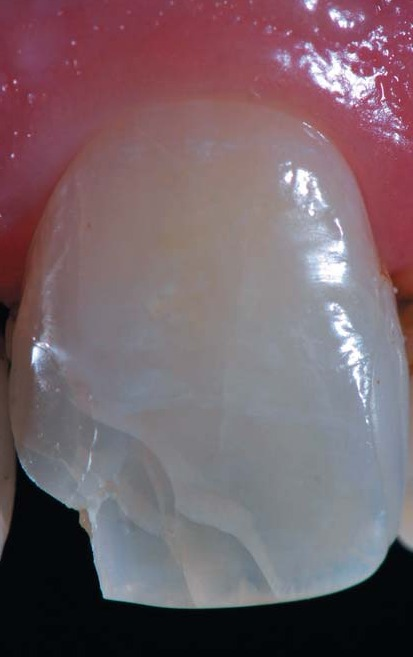
Фото 14. Фрактура і глибокі тріщини емалі, що виникли в результаті травми.
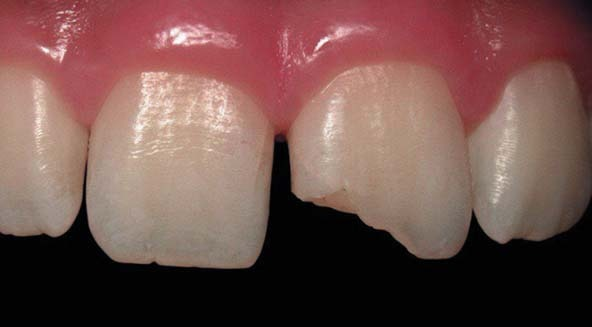
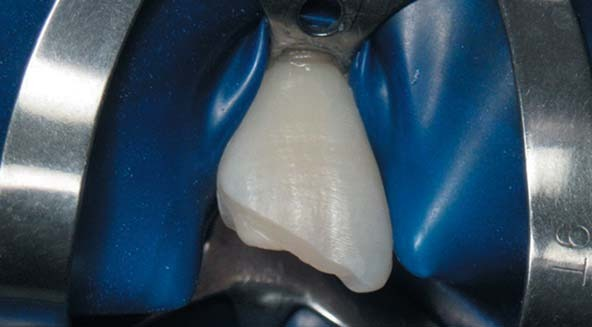
Фото 15 (а, б). Травматичні тріщини (а) і межі препарування (б).
Також одним з мінімально інвазивних методів є препарування за допомогою ультразвуку, ендочака та У-файлів/U-file. Цей метод дозволяє розшивати фісури і сліпі ямки точково з мінімальною редукцією природної емалі.
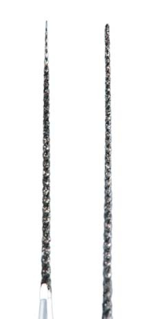
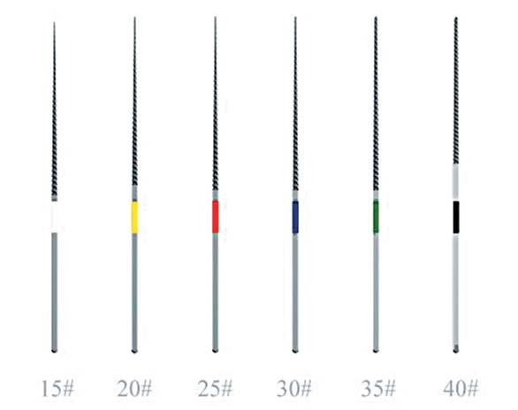
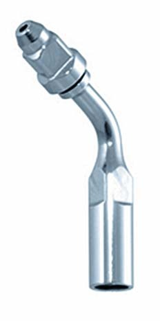
Фото 16 (а, б, в). А — У-файл/U-file з алмазним напиленням; б — набір У-файлів/U-file №15-40, в — ендочак.
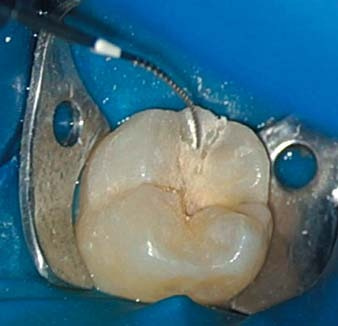
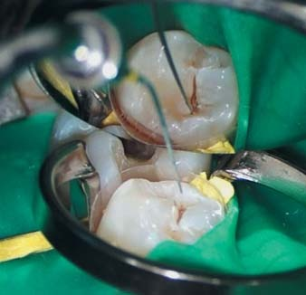
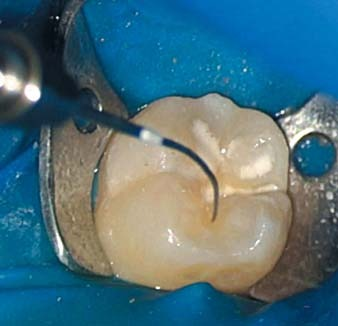
Фото 17 (а, б, в). Розшивання фісури ендочаком і У-файлом №15, препарування ендочаком і У-файлом №20.
Далі буде.
Література
- Meckel A. The formation and properties of organic films on teeth. Arch Oral Biol 1965; 10:585-597.
- Clasen A, Hanning M, Skjorland K, Sonju T. Analytical and ultrastructural studies of pellicle on primary teeth. Acta Odont Scand 1997; 55:339-343.
- Ishizaki A. Further studies and the direct bonding system. Part 1: Scanning electron microscopic studies of the bonding mechanism and the effect on the tooth surface. Jpn J Orthod 1975; 32:227-237.
- Kaneko H, Imau Y, Miyazawva H, Imamishi T, Akahane S. A study on pit and fissure sealant. Jpn J Pedodont 1986; 24:1-12.
- Kuroiwa M, Nakajima F, Kodaka T. Acid-etched effects after some preparations of enamel surfaces in human deciduous teeth. J Showa Univ Dent Soc 1984; 3:221-226.
- Hosoya Y, Johnston J. Evaluation of various cleaning and polishing methods on primary enamel. J Periodont 1989; l3:253-269.
- Hosoya Y, Goto G. The effects of cleaning, polishing pretreaments and acid etching times on unground primary enamel. J Periodont 1990; 14:84-92.
- Waggoner W, Slegal M. Pit and fissure. Sealant application: updating the technique. J Am Dent Assoc 1996; l27:351-361.
- Main C, Thomson J, Cummings A, Field D, Stephen K, Gillespie F. Surface treatment studies aimed at streamlining fissure sealant application. J Oral Rehabil 1983; l0:307-317.
- Schuermer E, Burgess J, Matis B. Strength of bond of composite resin to enamel cleaned with a paste containing fuoride. Gen Dent 1990; 38:381-383.
- Fritz V, Garcia-Godoy F, Finger W. Enamel and dentin bond strength and bonding mechanism to dentin of Gluma CPS to primary teeth. J Dent Child 1997; 64:32-38.
- Fuks A, Eidelman E, Shapira J. Mechanical and acid treatment of the prismless layer of primary teeth vs acid etching only: a SEM study. ASDC J Dent Child 1977; 44:222-225.